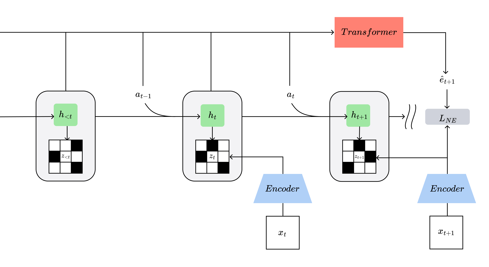
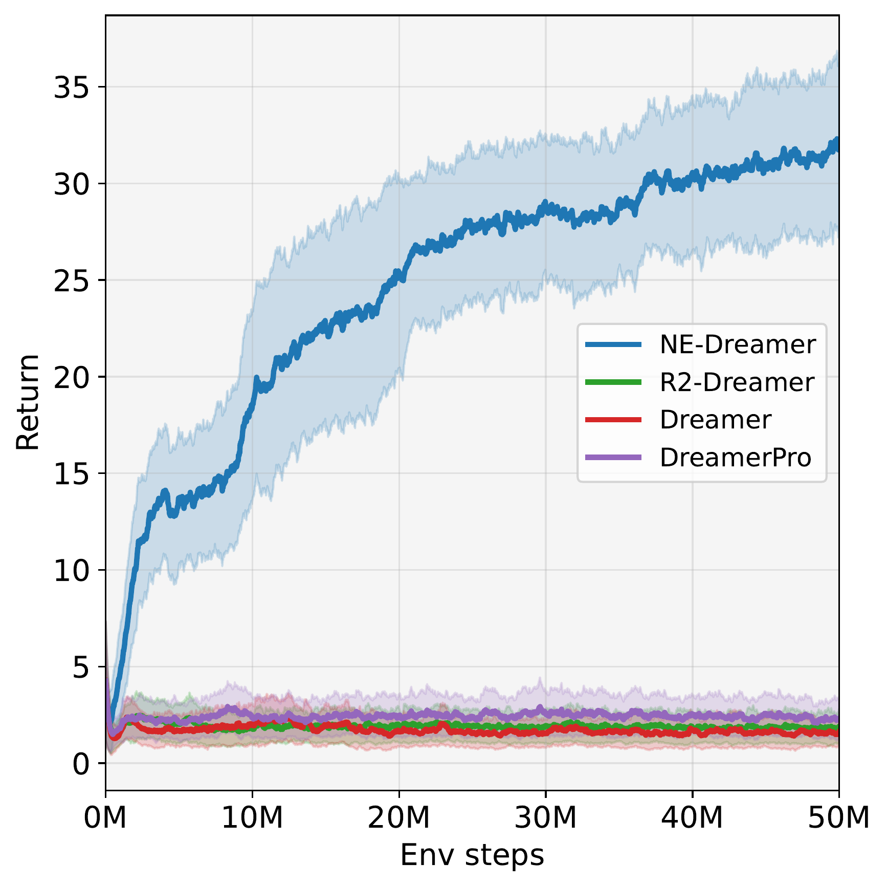
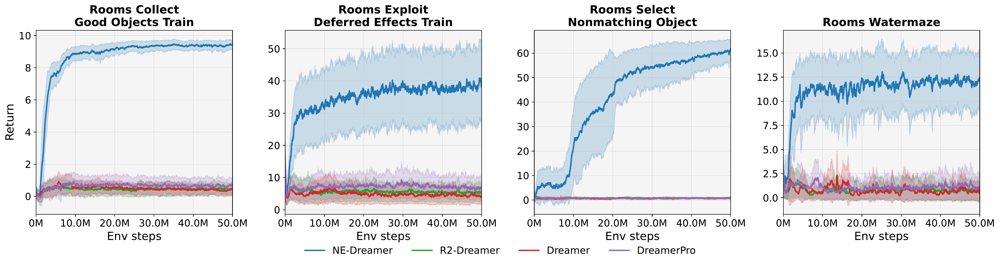
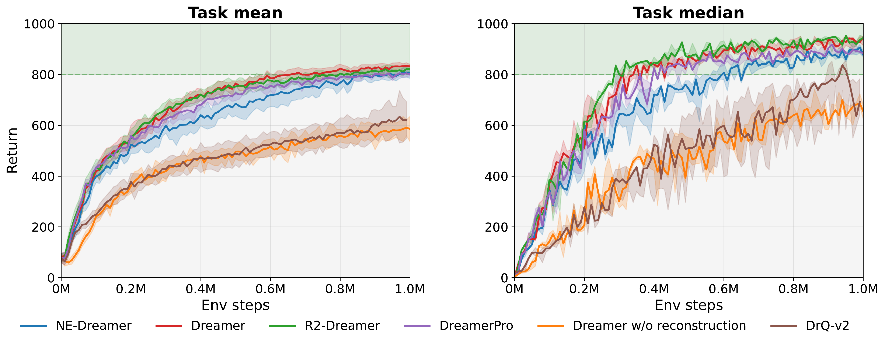
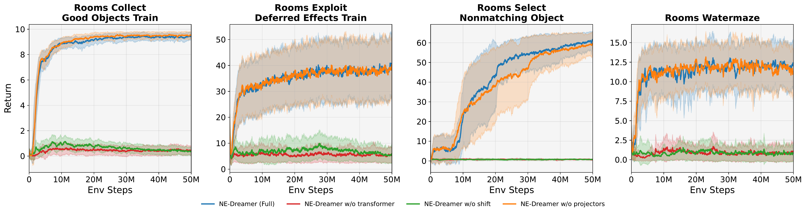
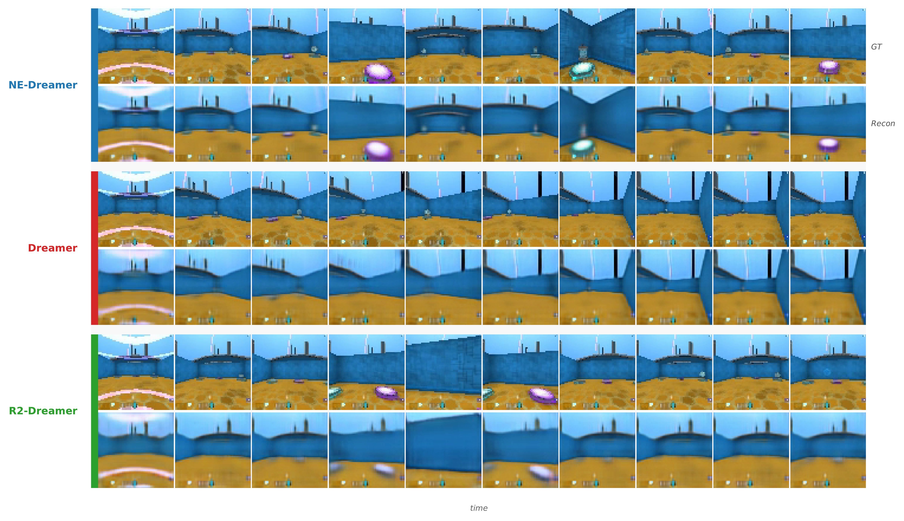

We introduce NE-Dreamer, a decoder-free MBRL agent that leverages a temporal transformer to predict next-step encoder embeddings from latent state sequences, directly optimizing temporal predictive alignment in representation space. On the DeepMind Control Suite, NE-Dreamer matches or exceeds DreamerV3 and leading decoder-free agents. On a challenging subset of DMLab tasks involving memory and spatial reasoning, NE-Dreamer achieves substantial gains.
Model-based reinforcement learning (MBRL) from high-dimensional observations hinges on learning a compact latent state that supports long-horizon prediction and control. Under partial observability, the agent must integrate information over time rather than react to a single frame. Existing decoder-free methods mainly enforce instantaneous agreement at the same timestep. Without an explicit temporal constraint, training can drift or collapse — failure modes that surface in memory- and navigation-heavy tasks.
NE-Dreamer replaces pixel-level reconstruction with a simple yet powerful objective: at each timestep, a temporal transformer predicts the next encoder embedding in the sequence, and this prediction is aligned to the actual next-step embedding using a redundancy-reduction metric (Barlow Twins). By shifting the focus from same-timestep matching to next-step prediction, NE-Dreamer learns temporally coherent latent states without the need for pixel reconstruction, data augmentation, or auxiliary regularization.

Method overview. NE-Dreamer keeps Dreamer's RSSM dynamics and imagination-based actor–critic, but replaces same-step pixel reconstruction with next-embedding prediction using a causal temporal transformer, improving long-horizon performance under partial observability.
We build on a recurrent state-space model (RSSM) with a deterministic recurrent state $h_t$ and a stochastic latent $z_t$. An encoder maps observations to embeddings $e_t = f_{\mathrm{enc}}(x_t)$. Given the previous latent state and action, the RSSM updates:
$h_t = f_{\mathrm{rec}}(h_{t-1}, z_{t-1}, a_{t-1})$
The world model is trained with reward and continuation likelihoods, a prior–posterior KL regularizer, and the proposed next-embedding loss:
$\mathcal{L}_{\mathrm{wm}} = \mathcal{L}_{\mathrm{rew}} + \mathcal{L}_{\mathrm{cont}} + \beta_{\mathrm{kl}} \mathcal{L}_{\mathrm{kl}} + \beta_{\mathrm{ne}} \mathcal{L}_{\mathrm{NE}}$
A causal temporal transformer $T_\theta$ uses only information available up to time $t$ to produce a next-step embedding prediction:
$\hat{e}_{t+1} = T_\theta(h_{\le t}, z_{\le t}, a_{\le t})$
The target is the stop-gradient next-step encoder embedding $e^\star_{t+1} = \mathrm{sg}(f_{\mathrm{enc}}(x_{t+1}))$. The alignment loss uses Barlow Twins:
$\mathcal{L}_{\mathrm{NE}} = \sum_i (1 - C_{ii})^2 + \lambda_{\mathrm{BT}} \sum_{i \neq j} C_{ij}^2$
This encourages invariance (large diagonal correlations) while discouraging redundancy (small off-diagonal correlations), applied to next-step prediction rather than same-timestep matching.
The DMLab Rooms benchmark directly targets the core challenge for model-based RL agents: reasoning over long temporal horizons in environments with sparse rewards and high partial observability. Under matched compute and model capacity (50M environment steps; 5 seeds; 12M parameters), NE-Dreamer outperforms strong decoder-based (DreamerV3) and decoder-free world-model baselines.

DMLab Benchmark Summary. Under matched compute and model capacity (50M environment steps; 5 seeds; 12M parameters), NE-Dreamer outperforms strong decoder-based (DreamerV3) and decoder-free world-model baselines (R2-Dreamer, DreamerPro) on the DMLab Rooms memory/navigation tasks.

DMLab Rooms: improved long-horizon memory/navigation. NE-Dreamer outperforms strong decoder-based (DreamerV3) and decoder-free world-model baselines (R2-Dreamer, DreamerPro) on four Rooms tasks. The largest gains occur when success depends on maintaining state over long horizons rather than reacting to short-lived visual cues.
On the DeepMind Control Suite, NE-Dreamer matches DreamerV3 and competitive decoder-free baselines, confirming that replacing reconstruction with next-embedding prediction improves the hard regime (DMLab) without sacrificing standard continuous-control performance.

DMC: removing reconstruction does not hurt standard control. On near-saturated pixel-based continuous-control benchmarks, NE-Dreamer matches or slightly exceeds strong decoder-based (DreamerV3) and decoder-free world-model baselines under a unified protocol (1M environment steps; 5 seeds; 12M parameters).
We systematically ablate three architectural and objective choices:
No transformer: Removing the temporal transformer causes performance to collapse, highlighting that causal sequence modeling is indispensable for partially observable environments.
No next-step shift: Training to match the current-step embedding (rather than predicting the next-step target) results in nearly complete loss of gains — demonstrating the need for temporal prediction.
No projector: Removing the lightweight projection head leads to only a minor reduction in asymptotic performance — the projector aids optimization but is not fundamental to the gains.

Mechanism on DMLab Rooms: predictive sequence modeling is the key. Under matched compute and model capacity (50M environment steps; 5 seeds), removing the causal temporal transformer or the next-step target shift substantially reduces performance. Removing the lightweight projector mainly affects optimization speed/stability, with smaller impact on final returns.
We train a post-hoc pixel decoder to reconstruct observations from frozen latent representations (not used during agent training). NE-Dreamer's latent representations preserve object identity, spatial layout, and task-relevant features consistently across time. In contrast, decoder-based Dreamer and decoder-free R2-Dreamer exhibit temporal inconsistency, where task-specific attributes appear transiently and then fade.

Post-hoc decoder reconstruction reveals temporal consistency. Rows show ground-truth observations (GT) and reconstructions from a post-hoc decoder trained on frozen latents. NE-Dreamer preserves task-relevant objects and spatial layout consistently over time (green circles), while same-timestep methods (Dreamer, R2-Dreamer) exhibit temporal inconsistency where task-specific attributes appear transiently and then fade (red circles).
We presented NE-Dreamer, a decoder-free Dreamer-style agent that learns world-model representations by predicting and aligning the next encoder embedding using a causal temporal transformer. NE-Dreamer improves long-horizon memory/navigation in DeepMind Lab Rooms while matching strong baselines on the DeepMind Control Suite, and ablations attribute these gains to predictive sequence modeling (causal transformer and next-step target shift), not reconstruction.
@misc{bredis2026embeddingpredictionmakesworld,
title={Next Embedding Prediction Makes World Models Stronger},
author={George Bredis and Nikita Balagansky and Daniil Gavrilov and Ruslan Rakhimov},
year={2026},
eprint={2603.02765},
archivePrefix={arXiv},
primaryClass={cs.LG},
url={https://arxiv.org/abs/2603.02765},
}